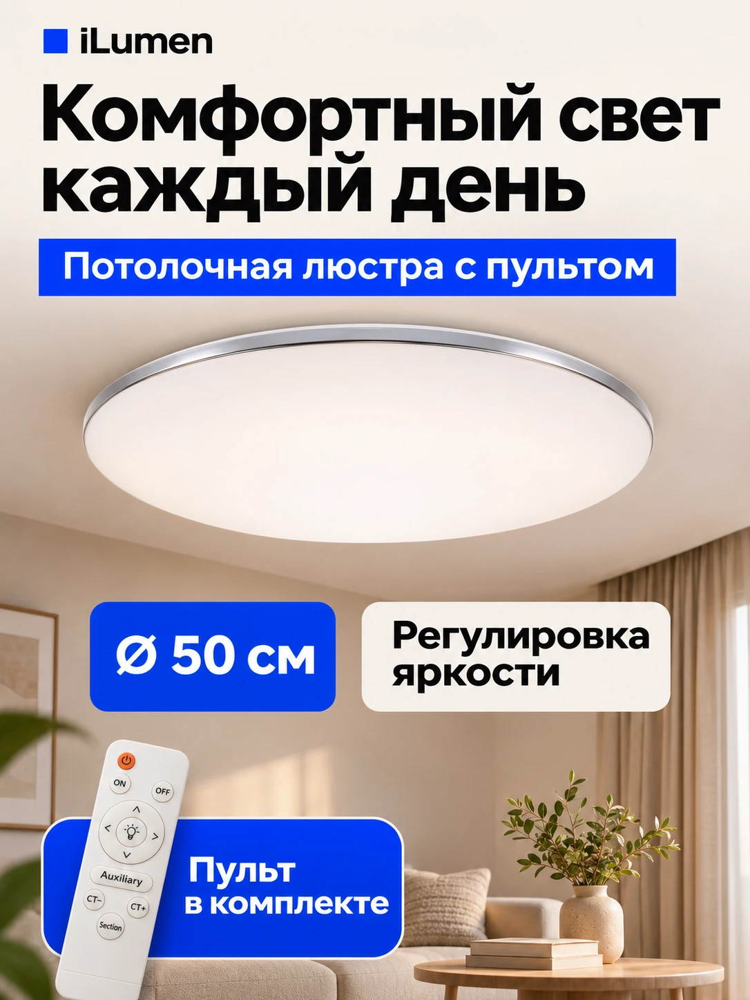
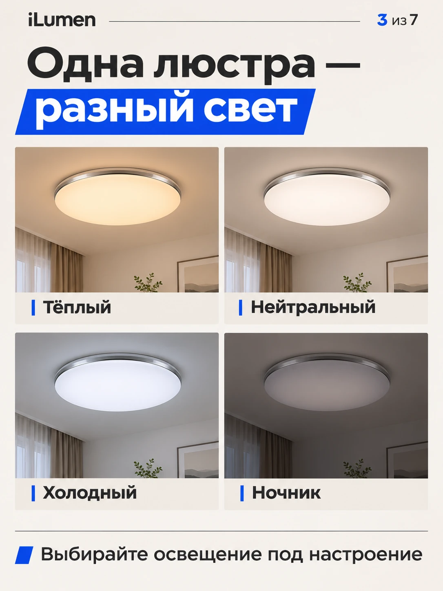
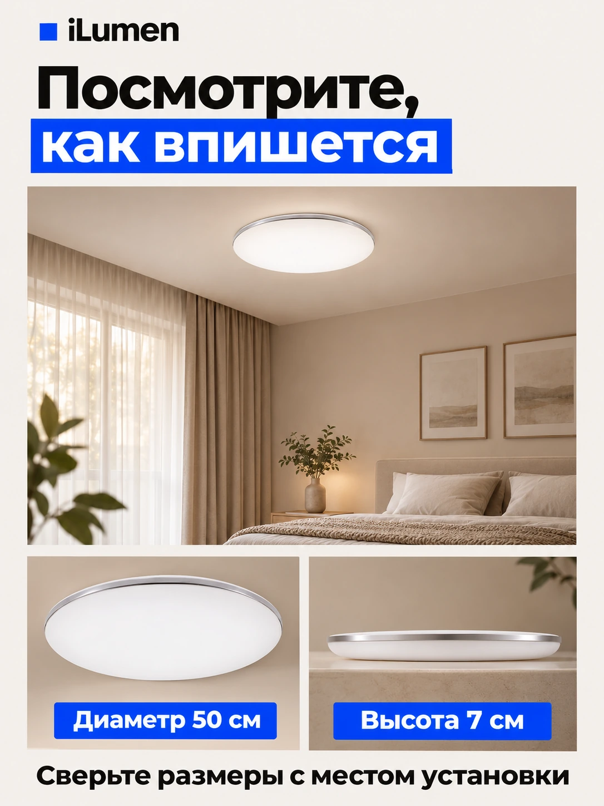

Описание без повторов
Вместо одинаковых абзацев — последовательные ответы: размеры, режимы света, управление, монтаж, комплектация и гарантия. Данные должны совпадать со слайдами и полями характеристик.
Что меняем в карточке iLumen — и почему покупателю станет проще выбрать.
Смотреть до и после
iLumen / разбор карточкиНазвание категории заметнее самого светильника.
Гарантия и характеристики расходятся между блоками.
За названием цвета скрывается другая модель.
Крупный светильник и спокойный фон без визуального шума.
Размер, регулировка яркости и пульт собраны вместе.
От первого впечатления — к размеру, управлению и доверию.
«Было» — ваш исходный слайд. «Стало» — предложенный макет. Ниже: весь разбор карточки, а не только инфографики.
Обложка Выбор Доверие
По вашему ТЗ и исходным материалам · 10 ноября 2026Выберите тему. Сравните проблему из аудита с решением и посмотрите, что ещё нужно доработать.
Все 10 исходных слайдов из папки «было». Стиль, режимы и объяснение пульта уже были — сохраняем полезное, меняем акценты и проверяем обещания.
Порядок ниже сгруппирован для разбора. Он не подтверждает порядок изображений в действующей карточке Ozon.
К новой галерееГалерея идёт в порядке вопросов покупателя. Нажмите на слайд, чтобы увидеть решение и комментарий к нему.
Один и тот же светильник воспринимается по-разному. Сценарий объясняет пользу быстрее списка характеристик.
Вечерний отдых и мягкая атмосфера.
Фрагменты вашего слайда. Визуальная иллюстрация, а не измерение освещённости. Точные значения Кельвинов — после сверки с паспортом.

Дизайн помогает увидеть преимущества. Единые и проверенные данные дают основание им доверять.
Это список сверки по ТЗ. Исправления в действующей карточке Ozon в рамках этой презентации не выполнялись.
Обложка приводит внимание. Название, описание и варианты объясняют, какой именно товар человек заказывает.
В аудите у семи люстр было одинаковое название: «Люстра потолочная светодиодная с пультом». Даже RGB с музыкой не отличалась в названии.
В описании дважды встречался Smartbuy, а абзацы повторялись. Проверяем фактический бренд и заменяем повторы конкретикой.
Люстра потолочная светодиодная с пультом, 50 см, 120 Вт, белая матовая
Размер, мощность, управление и исполнение видны ещё в выдаче.
Примеры из аудита для использования после проверки характеристик. Бренд добавлять по фактическому бренду товара.
Вместо одинаковых абзацев — последовательные ответы: размеры, режимы света, управление, монтаж, комплектация и гарантия. Данные должны совпадать со слайдами и полями характеристик.
«Белый», «слоновая кость», «кремовый», «зеркальный» не объясняют размер и функции. В пределах возможностей категории сделать выбор понятнее и добавить сравнение 40 см / 50 см / RGB.
На обложке оставить светильник, RGB и Bluetooth-колонку. Приложение, будильник и светомузыку раскрыть следующими слайдами, если функции подтверждены. Проверить, показывает ли уже имеющееся видео подключение телефона и работу колонки.
Сравнение из присланного аудита: прямые альтернативы рядом с карточкой, а не рейтинг продавцов по обороту.
Срез на 10 ноября · Москва · цены с банковской скидкой. У другого покупателя цена может отличаться. Данные не обновлялись заново.
| Карточка | Цена | Рейтинг / отзывы | Что это значит для iLumen |
|---|---|---|---|
| iLumen, 50 см / 120 ВтАртикул 2069656653 | 2 742 ₽ | 4,8 / 3 047 | Базовая точка сравнения. В срезе была доставка на следующий день. |
| LUCIMO, 50 см / 120 Вт | 2 941 ₽ | 4,9 / 40 535 | Близкая круглая модель. Обложка сразу показывает площадь, размер, мощность и режимы. |
| Smartbuy MEZZO, 120 Вт | 2 019 ₽ | 4,7 / 5 373 | Ценовой конкурент дешевле на 723 ₽. Есть выбор мощности. |
| Rivoli, 120 ВтПродавец в аудите: «ЭРА, официальный ма…» | 2 792 ₽ | 4,9 / 82 004 | Другой дизайн — светящиеся квадраты. Близкая цена; обложка продаёт вид люстры в интерьере. |
По этому срезу iLumen уже дешевле LUCIMO. Рядом со Smartbuy важнее понятнее объяснить преимущества. Рейтинг 4,8 и тысячи отзывов дают основу доверия — противоречия в карточке её ослабляют.
Отзывы могут объединять варианты товара. Их количество не равно продажам конкретного артикула. Источник: ваш присланный текст аудита.
Подготовить по две обложки для каждой пилотной модели. Важные надписи отодвинуть от краёв и проверить в маленьком размере мобильной выдачи.
Крупный товар, спокойный фон, Ø 50 см, пульт и компактная гарантия после проверки срока. Предоставленный слайд — основа для теста.

Референс композицииСветильник на потолке реальной комнаты, понятный масштаб, короткая подпись о регулировке света. Такую обложку ещё нужно подготовить; здесь показан фрагмент слайда о размере.
Переходы ÷ показы × 100%
Какая обложка приводит в карточкуЗаказы ÷ переходы × 100%
Помогает ли карточка принять решениеСравнивать при сопоставимых цене, рекламе и наличии. Рост заранее не обещаем — проверяем гипотезу.
Следующий шаг из аудита — выгрузка по товарам за последние 30 дней. Она поможет расставить приоритеты по цифрам.
Видят в выдаче
Открывают карточку
Рассматривают покупку
Завершают выбор
По каждому товару: показы, переходы, добавления в корзину, заказы и рекламные расходы за один и тот же период.
Какие карточки теряют клики в выдаче, а какие — покупателей после открытия. Низкий CTR направляет внимание к обложке и предложению; слабая конверсия требует проверки содержания, цены и условий.
Это план анализа. Фактических данных воронки пока нет; результаты и рост продаж не рассчитывались.
Начать с двух пилотных артикулов из ТЗ: 2069656653 и 2151745360.
Сначала убираем причины сомневаться. Затем даём новой подаче возможность доказать себя.
Скачать полный аудитБренд, мощность, температура, IP, монтаж, комплектация и гарантия — по документам.
Убрать повторы и чужой бренд, разделить названия моделей, согласовать все поля и слайды.
Разместить семь слайдов в новом порядке, проверить мобильную выдачу и безопасные зоны. Для RGB проверить, показывает ли имеющееся видео реальное подключение телефона и работу колонки; при необходимости дополнить.
Подготовить по две обложки для каждой пилотной модели. Сравнить CTR и конверсию при сопоставимых цене, рекламе и наличии. Собрать показы, переходы, корзины, заказы и рекламные расходы за 30 дней.
Покупатель видит, что получит.
Каждый слайд помогает сделать следующий шаг.
Что сделано